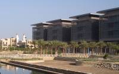
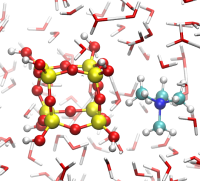
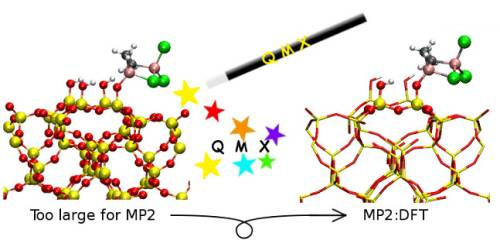

CADENCED¶
Computer Assisted Discovery and Elucidation of Novel Catalysts for Economic Development of Saudi Arabia
{kind=link}
Directed by: Philippe Sautet, ENS de Lyon
Contact: Philippe.Sautet @ ens-lyon.fr
KAUST catalysis Center Website
Associated Members :
IFP Énergies nouvelles (IFPEN)
Centre national de la recherche scientifique (CNRS)
Ecole normale supérieure de Lyon (ENS de Lyon)
King Abdullah University of Science and Technology - Research Center For Catalysis (KAUST - KCRC)
Research project¶
CADENCED is a joint research project between IFP, CNRS and ENS de Lyon in relation with the KCRC (KAUST Research Center For Catalysis). In the 2009-2014 it will address one challenging target in chemistry/petrochemistry, namely designing a new catalyst and process for higher alpha-olefin production from ethylene (1- hexene, 1-octene) and one challenging target in hydrogen production from water by photocatalysis using an approach combining computational and experimental methods to speed up the discovery process. In support of these two practical subprojects, and in view of the extensive use of computing required, another specific and challenging subproject on accelerated high performance computing (HPC) applied to catalysis is proposed.
The goal of this subproject is to develop and optimize a hybrid computing system by coupling a high performance computer with graphic microprocessors (GPU) or accelerators such as CELL processor and then to develop and implement algorithms improving performances of the quantum calculation software code (software enhancement) running on this hybrid system. These developments should provide an expected gain from 5 to 10 times in computing speed for applications in catalysis. Once implemented in KAUST these improvements should provide users in KCRC with enhanced HPC resources necessary to deploy “Computer Assisted Discoveries” methodologies applied to catalysis and materials sciences.
References¶
Initial step of silicate versus aluminosilicate formation in zeolite synthesis: reaction mechanism in water with tetrapropylamonium template, T.T. Trinh, X. Rozanska, F. Delbecq, P. Sautet, Phys. Chem. Chem. Phys. 2012, 14, 3369-3380.
Nature and Structure of Aluminum Surface Sites Grafted on Silica from a Combination of High-Field Aluminum-27 Solid-State NMR Spectroscopy and First-Principles Calculations, Rachel Nathaniel Kerber, Anthony Kermagoret, Emmanuel Callens, Pierre Florian, Dominique Massiot, Anne Lesage, Christophe Copéret, Françoise Delbecq, Xavier Rozanska, and Philippe Sautet, J. Am. Chem. Soc. 134 (15), 2012, 6767–6775.
Origin of the Enhanced Visible-Light Absorption in N-Doped Bulk Anatase TiO2 from First-Principles Calculations, M. Harb, P. Sautet, and P. Raybaud, J. Phys. Chem. C 2011, 115, 19394-19404
Accelerating VASP electronic structure calculations using graphic processing units Hacene, M.; Anciaux-Sedrakian, A.; Rozanska, X.; Klahr, D.; Guignon T.; Fleurat-Lessard, P., J. Comput. Chem., 2012, 33, 2581-2589. doi:10.1002/jcc.23096
QMX: a Versatile Environment for Hybrid Calculations Applied to Grafting of Al2Cl3Me3 on a Silica Surface, Kerber, T.; Kerber, R. N.; Rozanska, X.; Sautet, P.; Fleurat-Lessard, P., J. Comput. Chem., 2013, Early View DOI:10.1002/jcc.23225